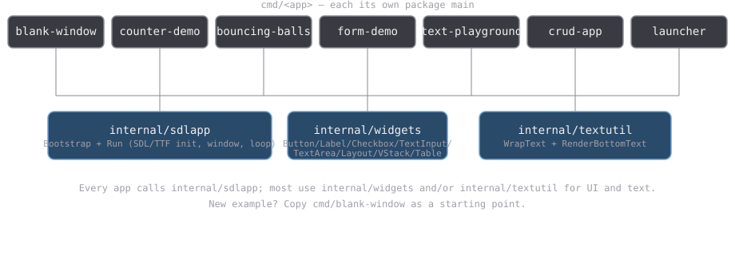

This repo is a small collection of desktop apps written in Go, using SDL3 for the window, drawing, and keyboard/mouse input. In plain terms: each app opens a window, draws some shapes/text into it, and reacts to clicks and key presses — no browser, no HTML, just a regular native program.
The Go bindings come from purego-sdl3, which talks to the SDL3 library directly without needing a C compiler (via purego).
Every app below shares the same small toolkit, kept in this repo under
internal/, so none of them start from scratch. See
Project layout below for how that fits together.
Two ways to run any app in this list, whichever suits you:
go run ./cmd/<name>
(e.g. go run ./cmd/blank-window).exe/ folder and double-click <name>-start-exe.cmd
(e.g. blank-window-start-exe.cmd). It runs the matching .exe with the
SDL3 DLLs already sitting next to it in that folder.There's also a Launcher app that lists every other app as a button — run that once and click your way to any of the others instead of remembering names. See its own page below.
Each app has its own page with a screenshot, controls, and how to run it.

internal/sdlapp — Bootstrap/Run: opens the SDL/TTF window+renderer
and drives the standard poll-events-then-render loop. Every app calls this.internal/widgets — the small UI toolkit: Button, Label, Checkbox,
TextInput, TextArea, and three ways to arrange them —
Layout (a horizontal row), VStack (a vertical column), and Table (a
2D grid that aligns column widths and row heights automatically).internal/textutil — word-wrapping and centered-text rendering helpers.cmd/blank-window — the starter template. Copy this directory to begin a
new example.Layout/VStack position
each widget as soon as it's added. Table is two-phase instead — add
every row first, then call Layout() once — because a column's width
depends on the widest widget in every row, not just the one being added.
Since positions are fixed at construction (not re-flowed every frame),
anything that sizes a window from its content has to use real values —
two bugs this session came from measuring a placeholder (an empty status
label, an unstretched table column) instead of the real content.Update(event, mx, my) bool, returning true if it
handled the event. A container (Layout/VStack/Table) just tries its
children in order and stops at the first one that returns true. There's
no focus stack beyond what a widget tracks itself — TextInput/TextArea
keep their own Focused flag and start/stop OS text input on change.exe/The .dll files in exe/ are loaded by name at runtime (via purego, not
a static link), so an .exe built today isn't locked to today's exact DLL
build. If exe/*.dll ever looks stale or mismatched, dropping in newer
SDL3/SDL3_ttf builds should keep every existing .exe working without a
rebuild.